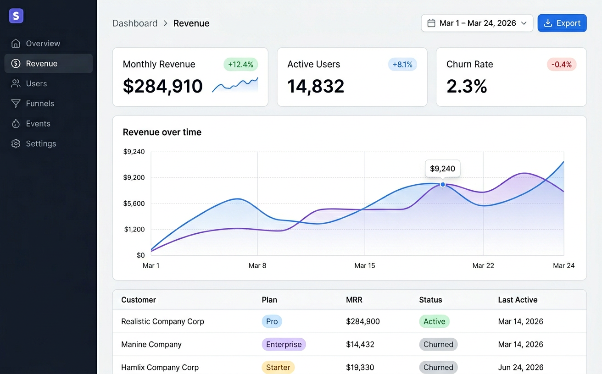

Revenue Dashboard — app.acme.com/dashboard/revenue
ANALYZED
REC res-9k2m
https://app.acme.com/dashboard/revenue
REC

RECORDING INFO
Audio
Console
Network
Duration: 2:14 • Recorded: Mar 24, 2:45 PM
AI ANALYSIS
ANALYZE
User successfully navigated the OpenTable reservation flow, completing a booking for 2 people at Neighborhood Sushi for counter seating on Tuesday, March 24 at 7:30 PM. The confirmation page displays properly with all key information clearly presented including reservation details, modification options, and restaurant information. User expressed satisfaction with the streamlined booking process and appreciated the counter seating option for the omakase experience.
ISSUES FOUND
✓ No issues detected - Reservation flow completed successfully
•
•